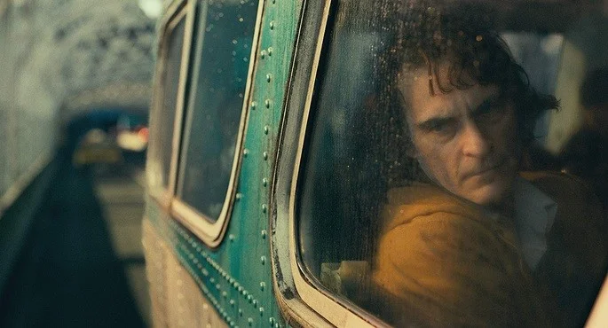
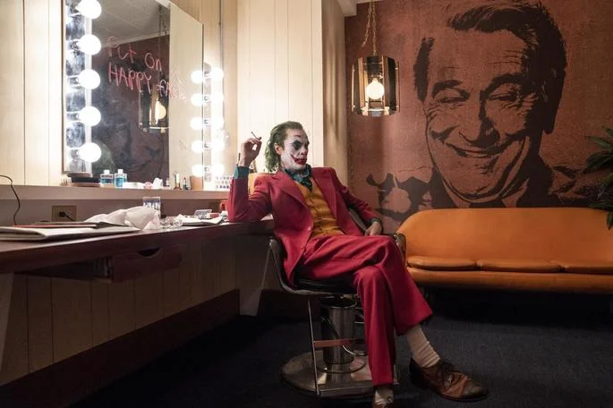
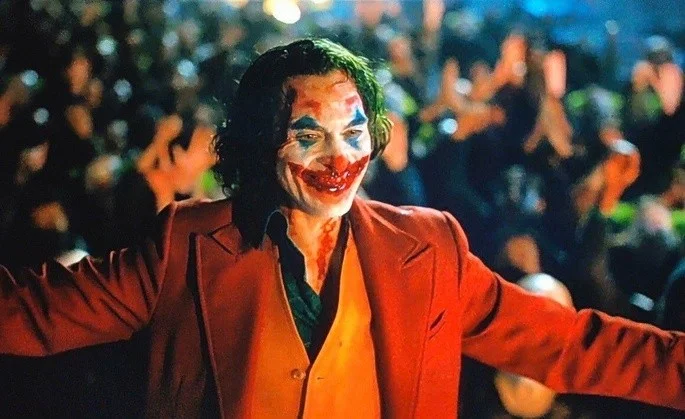

Resumo do Filme
Introdução
Arthur Fleck é um cidadão de Gotham que sofre de uma doença mental que o obrigar a rir incontrolavelmente. Para ganha a vida, ele faz pequenos trabalhos como palhaço, mas é vítima de violência nas ruas.
O protagonista vive com a mãe, Penny, uma mulher doente que vive obcecada com o antigo patrão, Thomas Wayne. Ela escreve cartas para o magnata, agora candidato à Prefeitura, pedindo ajuda financeira, mas nunca recebe resposta.
Sem apoio médico nem contatos sociais, o filho passa as noites assistindo televisão com Penny e acredita que um dia será um grande comediante.
Depois de ser agredido por um bando de garotos, ele recebe uma arma de um colega de trabalho, mas acaba deixando cair o objeto durante uma apresentação e é demitido.
Desenvolvimento
Bastante revoltado, ele está mascarado de palhaço no metrô quando três homens ricos começam a assediar uma mulher e a bater nele. É aí que Arthur dispara e acaba matando dois deles. Depois disso, ele vai para casa feliz e dança, pela primeira vez.
No dia seguinte, a notícia se espalha pelos jornais e a população começa a apoiar o assassino e a desejar a morte das elites, perante tanta injustiça no sistema social. No meio tempo, Arthur conhece Sophie, uma mãe solteira que mora no seu prédio e eles começam um relacionamento.
Quando Penny escreve uma nova carta, o protagonista decide ler o seu conteúdo e percebe que é filho de Thomas Wayne. É então que decide ir até à mansão da família e conhece Bruce no portão, aquele que viria a ser o rival. Um funcionário do local declara que conhecia Penny e que a história era mentira.
Depois da mãe passar mal e ser hospitalizada, Fleck vai atrás da ficha psiquiátrica da mãe e descobre que foi adotado e sofreu violência por um antigo companheiro dela. Mais tarde, quando vai visitá-la, Arthur decide sufocá-la com o travesseiro e matá-la.
A partir daí, ele se isola em casa sozinho, mas a sua espiral depressiva é interrompida quando um vídeo seu é transmitido no programa.
Murray, o apresentador, ridiculariza o seu trabalho, e chama Arthur para participar no programa ao vivo, para humilhá-lo ainda mais.Quando aceita o convite, Arthur pinta o cabelo de verde e se maquia de Coringa, nome que passa a usar.
No dia em ele vai à televisão, está marcado um grande protesto nas ruas e todas as pessoas usam máscaras de palhaço. Assim, quando a polícia consegue identificá-lo e persegui-lo, perde o seu rastro na multidão e acaba sendo linchada.
Conclusão
Já durante o programa de Murray, Arthur confessa os assassinatos e discursa acerca da sociedade que o marginalizou, culpando também shows televisivos como aquele. Em seguida, dispara dois tiro contra o apresentador, que morre na hora.
Contudo, quando está sendo levado pelos policiais, o carro é interceptado pelos manifestantes e o Coringa é libertado.
Entusiasmado, ele celebra o caos e dança, comandando a multidão. É também durante essa noite que Thomas Wayne e a esposa são assassinados na frente do pequeno Bruce.
Nas cenas finais, Arthur está internado num hospital psiquiátrico e conversa com a terapeuta. No rosto, mantem o seu riso de Coringa que anuncia que a confusão está apenas começando.